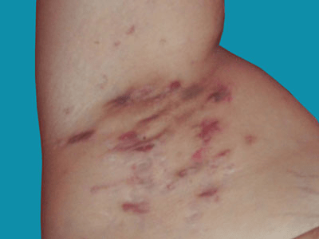

Hidradenitis suppurativa is a chronic and stubborn disease centred on inflammation of the large specialised
sweat glands (apocrine glands) that are found mainly in the armpits and groins. These areas show a
distinctive mixture of boil-like lumps, areas leaking pus, and scarring.
Hidradenitis suppurativa is a long term, recurrent, and painful disease in which there is inflammation
(redness, tenderness and swelling) in areas of skin containing apocrine sweat glands. These glands are
found mainly in the armpits, breasts and groins. Within HS there is a blockage of the hair follicles.
This causes a mixture of boil-like lumps, areas leaking pus, and scarring.Hidradenitis suppurativa is a
long term, recurrent, and painful disease in which there is inflammation (redness, tenderness and swelling)
in areas of skin containing apocrine sweat glands. These glands are found mainly in the armpits, breasts
and groins. Within HS there is a blockage of the hair follicles. This causes a mixture of boil-like lumps,
areas leaking pus, and scarring.

Hidradenitis suppurativa sometimes runs in families, and some patients or family members may also have had bad acne, or a chronic abscess at the base of the spine (a pilonidal sinus).
No, it usually persists for many years, but may disappear eventually. Treatment usually helps even though it cannot switch the hidradenitis off once and for all.
Hidradenitis suppurativa can be itchy, but is usually painful, and the lumps hurt if they are pressed.
Treatment is tailored for each individual. In general terms, early onset of HS is usually treated medically, whereas more longstanding and severe HS may benefit from surgical intervention, especially if there are various affected sites.